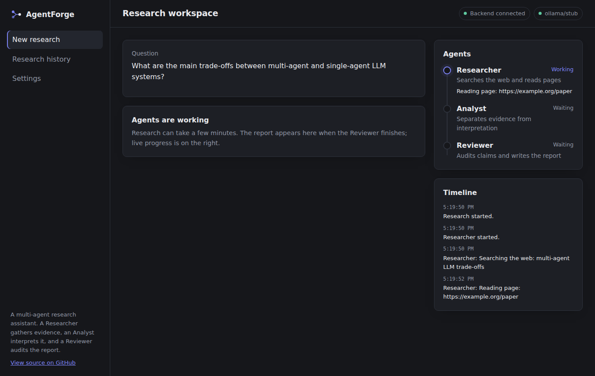
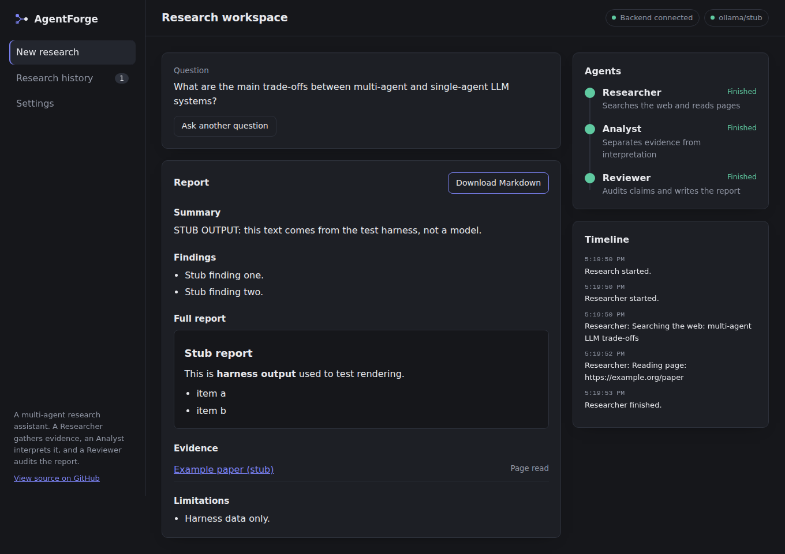

A research assistant that shows its sources and its failures.
AgentForge runs a Researcher, an Analyst and a Reviewer in sequence. Every URL in a report comes from a real search or page fetch, and a run that goes wrong says so instead of returning a made-up answer.
Built with CrewAI, FastAPI, React, Vite and TypeScript.
Follow one question through the pipeline
Select an agent to see what it hands to the next one.
Illustrative sample. Composed to show the output format. It was not produced by a model run, and the example.org sources are placeholders.
Sample question What are the main trade-offs between multi-agent and single-agent LLM systems?
Evidence notes
- web_search multi-agent LLM systems trade-offs
- fetch_page example.org/source-a
- web_search multi-agent LLM cost and latency
-
Specialized agents keep each prompt focused, which can improve quality on multi-step tasks.
-
Every extra agent is another model call, so cost and latency go up.
-
Not verified: whether the benefit holds with small local models.
Hands to the Analyst: these notes and the source URLs.
Evidence and interpretation, kept apart
- Evidence
- One source reports that focused prompts help multi-step tasks. One search snippet reports higher cost with more model calls.
- Interpretation
- Multi-agent setups probably pay off when a task has distinct phases, and cost more without benefit when it does not.
- Gaps
- Nothing gathered on failure modes, such as agents repeating each other's mistakes.
- Limitations
- Only two sources, and one was not read in full.
Hands to the Reviewer: the analysis and the researcher's original notes.
Final report
Summary
Multi-agent setups trade extra cost and latency for more focused steps. The evidence gathered is thin, so treat both points as leads to verify, not conclusions.
claim_2_snippet_only: the cost claim rests on a search snippet. The page itself was not read.
Evidence
- example.org/source-a (placeholder)Page read
- example.org/source-b (placeholder)Search result only
Limitations
Two sources. No evidence on small local models.
Returned to the browser as structured JSON, with the source list recorded by the tools.
Built so a report can be checked
Four choices that decide whether you can trust what comes back.
- Sources come from tools, not from the model
- The source list is recorded when the search and fetch tools run, so the model cannot add a URL to it. Each source says whether the page was read or only appeared in search results.
- Failures stay failures
- A model error, a timeout, or a missing source list ends the job as failed, with the reason. The interface never falls back to sample output.
- Progress is real
- The agent cards and timeline are driven by events emitted during the run: agent started, tool called, agent finished.
- Long jobs do not hold a connection open
- Starting a run returns a job id immediately and the browser polls for updates. Free hosting proxies tend to cut long requests, and this avoids that.
The interface
A sidebar, live agent cards, a timeline of backend events, and a report viewer with Markdown download.


Both screenshots were captured against a stubbed backend, so the report text is placeholder output from the test harness.
How the pieces connect
The browser starts a job and polls it. Worker threads run the crew, and the tools feed a source collector that the final result reads from.
What has been verified
Measured on the first commit. Nothing here is estimated.
Measured
| Backend tests | 21 passing: validation, missing model, success, failure, timeout, CORS, URL guard, parsing |
|---|---|
| Frontend unit tests | 5 passing, 0 lint warnings |
| Production build | 353 kB JavaScript, 109 kB gzipped |
| Browser run in Chromium | Form validation, live progress, report, download, history, failed run, and a mobile layout with no horizontal scroll, against a stubbed backend |
| Clean checkout | Fresh clone, fresh install, all of the above passes |
Not yet verified
- A full run against a live language model.
- How well the free DuckDuckGo-based search holds up under real use.
- A deployed backend. This site is static and does not call one.
Results from live runs will be added here once they exist.
Run it on your machine
You need Python 3.10 or newer, Node 20 or newer, Git, and one model: a Gemini or Groq API key, or a local Ollama install.
-
Clone and set up
The setup script creates the Python environment, installs both halves, and copies the
.envtemplates. -
Add your model
Open
backend/.envand setAGENTFORGE_MODELandAGENTFORGE_API_KEY. For Ollama, useollama/llama3.1andAGENTFORGE_BASE_URL=http://localhost:11434. -
Start both servers
Open localhost:5173. The header should read "Backend connected" next to your model name.
git clone https://github.com/SahajIVVIX-1/AgentForge.git
cd AgentForge
scripts/setup.sh # Windows: scripts\setup.ps1
# edit backend/.env: model and API key
scripts/dev.sh # Windows: scripts\dev.ps1Small local models can struggle with structured output. When that happens the report is shown as raw text with a visible failed check.